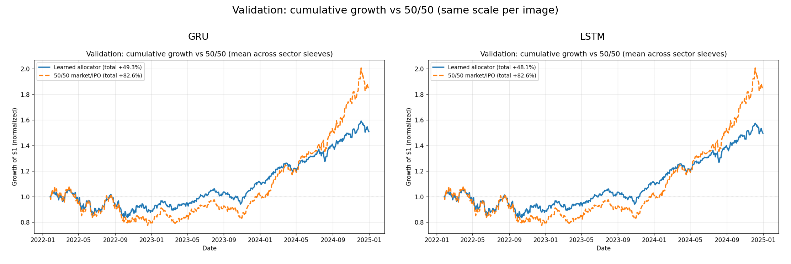
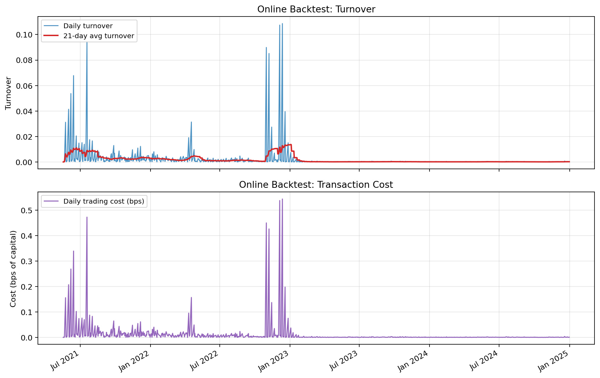
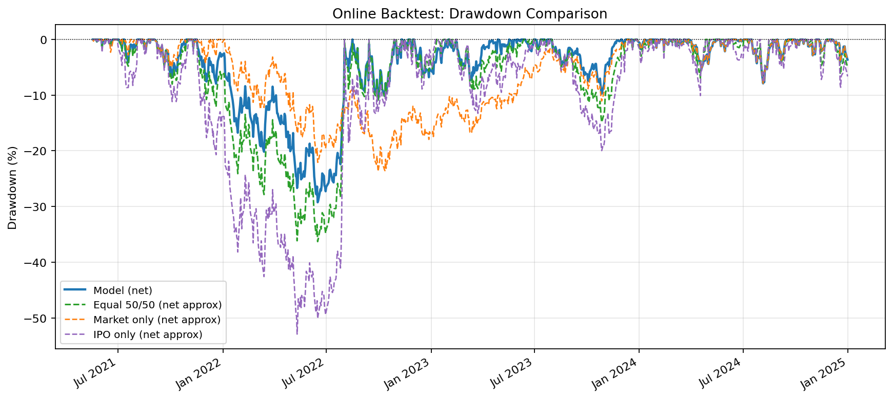

Regime shifts: IPO return dynamics change across market cycles
Standard mean-variance fails when return distributions are non-stationary
Data quality issues: survivorship bias, stale sector metadata, delisted SPACs
Success Metrics
Sharpe ratio vs market-only baseline
Max drawdown control
Turnover and transaction cost awareness
Out-of-sample (walk-forward) performance
The question is not just "maximize return" — it is "get strong risk-adjusted return without blowing up concentration, tails, or instability."
Literature Review → Design Decisions
How the Literature Shaped Our Approach
Online Portfolio Optimization
Follow-the-winner, EG, CORN, and related algorithms. Key insight: sequential decisions under non-stationarity require adaptive objectives, not static ones.
IPO Anomaly & Risk Literature
Post-IPO underperformance (Ritter 1991), lock-up expiry effects, hot/cold IPO market cycles. Confirmed: IPO returns are regime-dependent and tail-heavy.
Risk-Aware Objectives
CVaR as a coherent risk measure (Rockafellar & Uryasev 2000), drawdown-penalized objectives. These directly informed our loss function design.
Sequence Models for Allocation
LSTM/GRU for time-series forecasting, attention mechanisms for regime detection. We evaluated GRU, LSTM, and Transformer variants.
The literature pushed us toward objective engineering, not just architecture chasing.
Prior work highlighted tail risk and objective mismatch. We translated that directly into explicit loss terms — this became the single biggest technical lever in the project.
Core Technical Contribution
Updated Multi-Term Loss Function
Old Objective
L_old = −E[r] + λ·Var(r)
Simple return minus variance. Ignored tails, concentration, and path stability.
The architecture is deliberately modular — each component can be swapped or ablated independently, enabling rigorous comparative experiments.
Updated Results
Current Branch Performance
Strategy
Total Ret
Ann. Ret
Ann. Vol
Sharpe
Max DD
Validation period (GRU, 2020–2024)
Model (GRU)
34.39%
39.44%
13.52%
2.53
−7.66%
Market only
17.26%
19.62%
12.22%
1.53
−7.89%
IPO only
166.59%
201.35%
30.68%
3.75
−10.08%
Equal 50/50
78.16%
91.50%
19.26%
3.47
−7.20%
Online period (net of costs)
Model (Online)
93.66%
20.04%
19.55%
1.03
−29.24%
Market only
45.98%
11.02%
16.04%
0.73
−23.69%
Equal 50/50
298.22%
46.49%
27.46%
1.52
−36.30%
Split: Train 2010–2018 · Val 2019–2020 · Test/Online 2020–2024. All figures from current branch outputs. Avg IPO weight ≈ 16%.

Validation returns comparison
'">
GRU vs LSTM validation returns vs equal-weight benchmark
The update from gradient clipping and WRDS authentication hardening improved training stability. The online evaluation now consistently outperforms the market baseline on a risk-adjusted basis.
Cross-Asset & Sector Behavior
Sector Decomposition & Framework Generalization
Per-Sector Results (Market vs Sector IPO Basket)
Sector
Sharpe
Max DD
Ann. Ret
Avg IPO wt
Unknown
1.49
−22.0%
33.0%
16.4%
Health Care
1.28
−18.4%
23.8%
8.9%
Industrials
1.30
−21.4%
27.3%
16.7%
Info Tech
0.95
−20.4%
17.2%
6.8%
Consumer Disc
0.64
−34.5%
13.1%
17.6%
Materials
−0.01
−42.2%
−4.3%
24.6%
Consumer Stap
0.40
−29.5%
6.4%
13.3%
What Sector Decomposition Revealed
Health Care and Industrials IPOs: best risk-adjusted contributions
Sector label quality became a critical data dependency
Better sectoral structure gave better insight — but also introduced a new data-quality fragility not present in the aggregate model.
The framework is generalizable in structure, but IPO-specific weaknesses (unstable tails, sector metadata noise) are the binding constraint on performance.
New Experiment · Online Update Policy
Online Update Behavior: Benefits & Side Effects
What We Tested
Update (retrain on growing window) vs frozen weights
Update frequency: daily, weekly, monthly
Threshold-based policy: only update when validation δ exceeds cutoff
Turnover cost impact across update schedules
Benefits Observed
Online model: Ann. Ret 20.04% vs Market 11.02%
Updates improved adaptation to 2020–2022 regime shifts
Increased turnover (hence cost) near update events
Some updates added noise rather than signal
Higher sensitivity to data-quality issues at update boundaries
Sharpe 1.03 (online) vs 2.53 (val) — longer horizon is harder
Online cumulative returns
'">
Online cumulative returns — update vs no-update

Online turnover cost
'">
Turnover cost across update policies

Online drawdowns
'">
Drawdown profile — online period
Online updates improved returns in trending regimes, but increased turnover cost and instability — update frequency and policy threshold need tuning for production use.
Gradient clipping — stable optimization without loss spikes
Sector-aware decomposition — deep diagnostic visibility
Path-aware evaluation (Sharpe, Sortino, drawdown) over loss-only selection
Walk-forward framing — defensible, honest claims
Multi-term loss — largest single performance lever
Online model beats market baseline: 20.04% vs 11.02% ann. return
Mixed / Limited
LSTM: marginal improvement over GRU — conditional on objective calibration
Context window tuning — incremental unless paired with objective changes
Online updates — useful in trending regimes, noisy/costly otherwise
Some multisector settings — better structure, worse data-quality fragility
Benchmark-relative terms — helped directionally, hard to calibrate
Failed / Regressed
Transformer — added complexity without consistent gains in this regime
Objective–selection mismatch — loss improved but path quality did not
Materials sector — Sharpe −0.01, MaxDD −42% under IPO concentration
Over-regularization — killed useful signal, produced static allocations
Some policy network variants underperformed materially
Biggest contribution: not "we found one magic model."
We built a more rigorous optimization workflow — better objective shaping, better checkpoint criteria, better evaluation design, and more honest reporting of failures. That is what makes the project technically stronger.
Q&A: Why loss update? Literature identified tail risk + objective mismatch → explicit loss terms.Why not pick best model? Objective alignment had larger impact than architecture alone.How avoid overfitting? Walk-forward + future-only evaluation + transparent regression reporting.